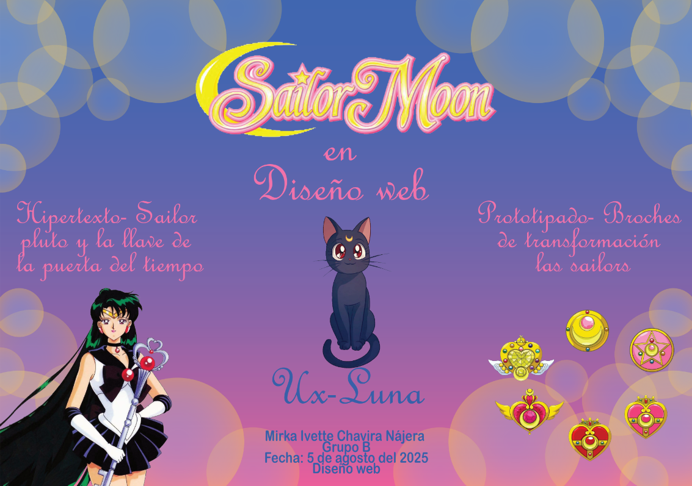
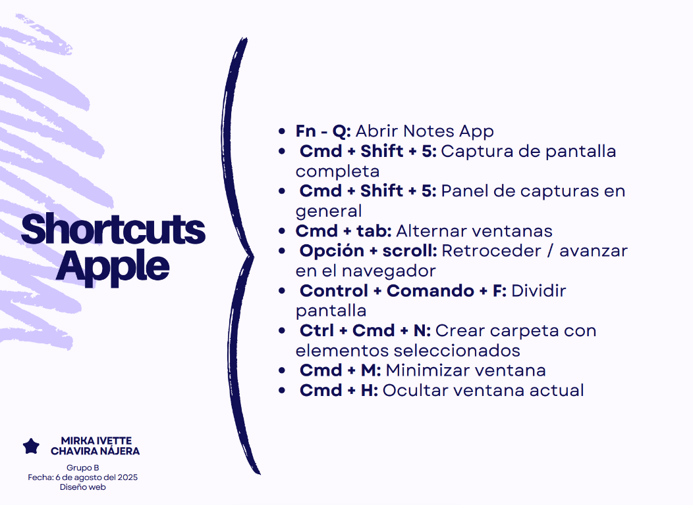
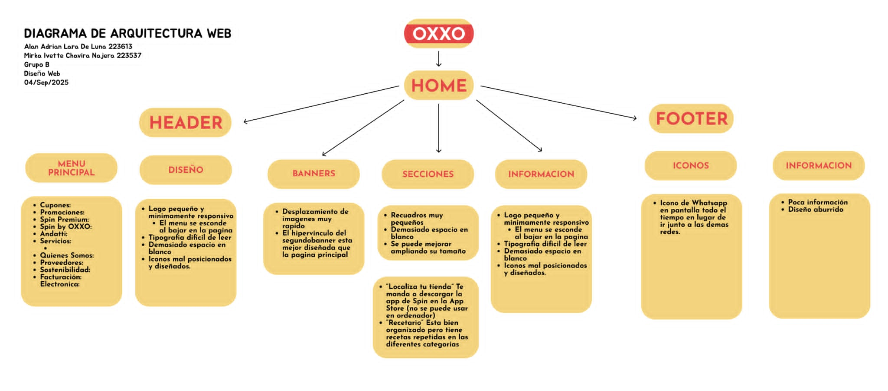
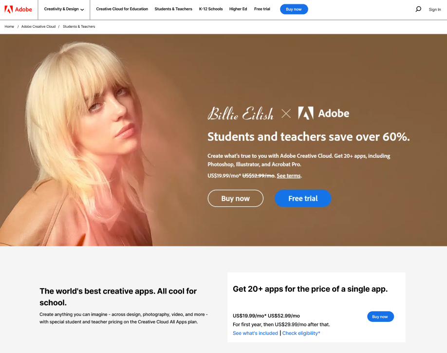
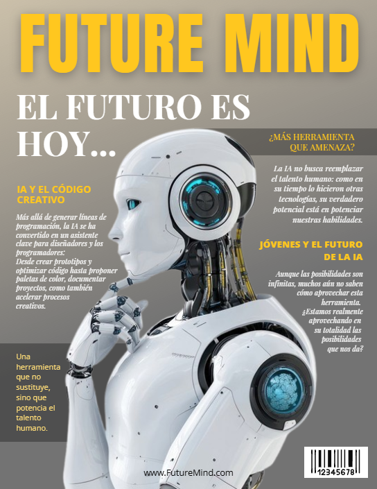

Temas principales
¿Qué es el Diseño Web y una Página Web?
El diseño web es la planificación y creación de páginas en internet, combinando aspectos visuales con funcionalidad y un objetivo. Una página web es un documento digital que se accede desde un navegador y forma parte de un sitio web.
Conceptos básicos
El Hipertexto es texto que contiene enlaces (hipervínculos) hacia otros documentos o páginas. Es la base de la navegación en internet. El UX o Experiencia de Usuario es cómo se siente una persona al usar una página o aplicación. Una buena UX busca que el sitio sea fácil de usar, rápido y agradable. El Prototipado es la creación de modelos o bocetos interactivos de una página antes de programarla. Permite visualizar el diseño, probar ideas y detectar errores a tiempo.
Shortcuts de Apple
¿Qué es un Diagrama de DOM / Flujo?
DOM (Document Object Model): Es la representación en forma de árbol de todos los elementos de una página (títulos, párrafos, botones). Diagrama de flujo: esquema visual que muestra los pasos o caminos que sigue un usuario al navegar en un sitio. En conclusión el DOM es técnico y lo usa el navegador/programador y el diagrama de flujo es visual y lo usan diseñadores y equipos para planear la experiencia del usuario.
Trabajos de clase
Página en figma
Portada de revista
Diagrama

¿Cómo puede ayudarte la IA?
La inteligencia artificial se ha convertido en un aliado para el diseño y la animación. Facilita la creación de prototipos, storyboards y movimientos sin necesidad de dominar procesos técnicos complejos. Herramientas como Adobe Animate + Firefly, Runway Gen-2, Pika Labs, Kaiber AI y DeepMotion permiten transformar texto, imágenes o videos simples en animaciones atractivas. Así como plataformas más sencillas como Canva o Animaker que facilitan la creación de animaciones sin necesidad de conocimientos técnicos. A diferencia de la animación tradicional donde el creativo dibuja cuadro por cuadro la IA asume tareas repetitivas y acelera la producción, dejando que el diseñador se concentre en la narrativa y las ideas. Esto significa que la IA no sustituye al animador, sino que funciona como una extensión de sus herramientas, abriendo posibilidades para quienes están aprendiendo o no dominan la parte técnica de la animación.